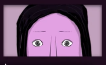
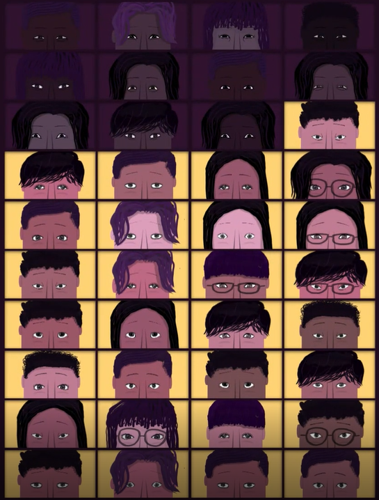

the middle ages

Don't like scrolling? Watch the video instead!
Hey, what grade are you in?
Fourth grade!
🦋

4th
Elementary
I mean, I guess...
Yeah! Wanna meet my
classmates?
classmates?
Wow. Thanks, kid. Mind if I ask
your class a question?
your class a question?
Sure! But hurry up. Recess
starts soon.
starts soon.
Belonging
9%

4th
Elementary
Those of us in yellow feel like
we belong. Why do you ask?
we belong. Why do you ask?
Well, feeling like you belong is
really important. It helps you feel
really important. It helps you feel
Belonging
73%
4th
Elementary
Those of us in yellow feel like
we belong. Why do you ask?
we belong. Why do you ask?